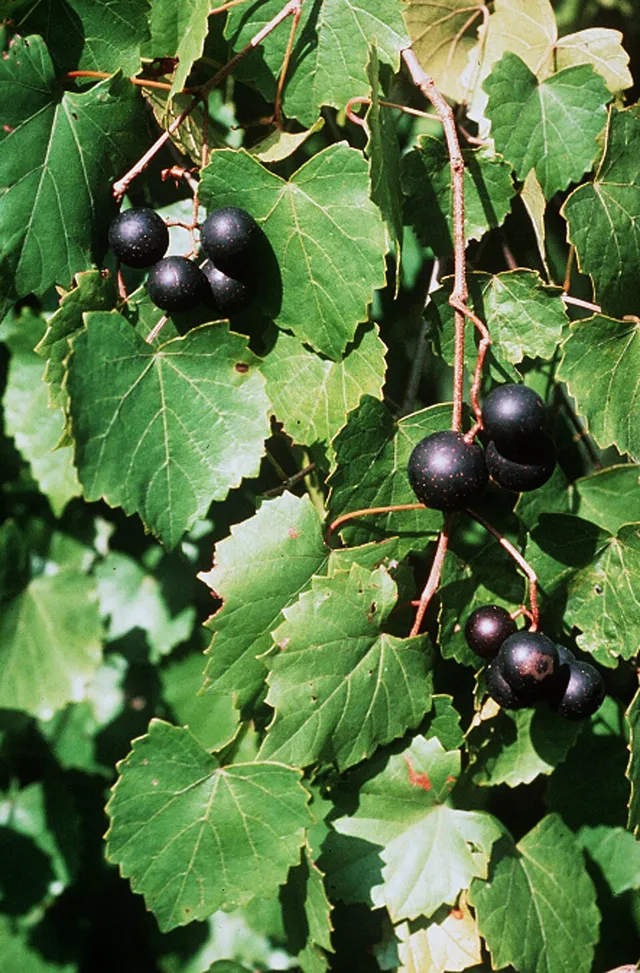

Desserts · Popular in Southeast
Muscadine hull pie
Muscadine hull pie is made with wild muscadine grape, a favourite in Southeast.

How do you make muscadine hull pie?
Southern pie of muscadine hulls and pulp.
Wild ingredients
- Muscadine grape (Vitis rotundifolia): in season August to October
Watch the recipe

Video: My Earth Kitchen on YouTube